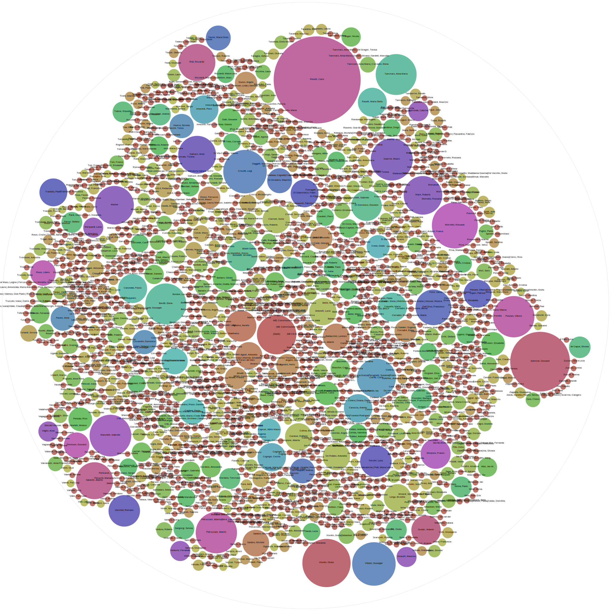
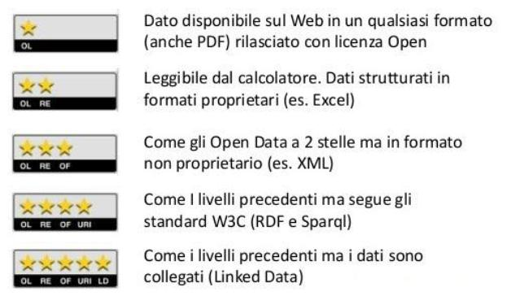

<!doctype html>
<html lang="it">

	<head>
		<meta charset="utf-8">

		<title>Machine Learning</title>

		<meta name="description" content="Presentazione Machine Learning 2016">
		<meta name="author" content="Andrea Zanni">

		<meta name="apple-mobile-web-app-capable" content="yes" />
		<meta name="apple-mobile-web-app-status-bar-style" content="black-translucent" />

		<meta name="viewport" content="width=device-width, initial-scale=1.0, maximum-scale=1.0, user-scalable=no">

		<link rel="stylesheet" href="reveal.js/css/reveal.css">
		<link rel="stylesheet" href="reveal.js/css/theme/black.css" id="theme">

		<!-- For syntax highlighting -->
		<link rel="stylesheet" href="reveal.js/lib/css/zenburn.css">

		<!-- If the query includes 'print-pdf', use the PDF print sheet -->
		<script>
			document.write( '<link rel="stylesheet" href="reveal.js/css/print/' + ( window.location.search.match( /print-pdf/gi ) ? 'pdf' : 'paper' ) + '.css" type="text/css" media="print">' );
		</script>

		<!--[if lt IE 9]>
		<script src="reveal.js/lib/js/html5shiv.js"></script>
		<![endif]-->
	</head>

	<body>

		<div class="reveal">

            <div class="slides">

                
<section data-markdown data-separator="^\n---\n$" data-separator-vertical="^\n--\n$" data-notes="^Note:">
<script type="text/template">

<!-- .slide: data-background="#bb0000" -->

##Open data bibliotecari

Andrea Zanni 

[openMLOL](http://openmlol.it)

</script>
</section>


<section data-markdown data-separator="^\n---\n$" data-separator-vertical="^\n--\n$" data-notes="^Note:">
<script type="text/template">

<!-- .slide: data-background="#0A2A34" -->

Perchè gli open data sono importanti?

--

<!-- .slide: data-background="#0A2A34" -->

* struttura <!-- .element: class="fragment" data-fragment-index="1" -->
* connessione <!-- .element: class="fragment" data-fragment-index="2" -->
* modularità <!-- .element: class="fragment" data-fragment-index="3" -->
* analisi <!-- .element: class="fragment" data-fragment-index="4" -->
* aggregazione <!-- .element: class="fragment" data-fragment-index="5" -->
* visualizzazione <!-- .element: class="fragment" data-fragment-index="6" -->
* network effects <!-- .element: class="fragment" data-fragment-index="7" -->
* machine learning <!-- .element: class="fragment" data-fragment-index="8" -->

--

<!-- .slide: data-background="#ffffff" -->

</img>

--

<!-- .slide: data-background="#0A2A34" -->

sui dati ci puoi costruire sopra

--

<!-- .slide: data-background="#0A2A34" -->

_"library as a platform"_

David Weinberger

--

<!-- .slide: data-background="#0A2A34" -->

* infrastruttura: servizi, dati, strumenti
* possibilità di sviluppare nuovi servizi
* creare _valore_ lasciando ad altri la possibilità di costruire sopra

--

<!-- .slide: data-background="#0A2A34" -->

biblioteche come piattaforme _aperte_

--

<!-- .slide: data-background="#0A2A34" -->

* essere _aperti_ a tutti
* dare accesso ad ogni pezzo di informazioni che possiedono: contenuti digitali, metadati, il loro utilizzo, interazioni sociali attorno
* abilitare nuovi prodotti e servizi creati da chiunque abbia un'idea
* integrare tutto ciò che la biblioteca sa attorno all'ecosistema della Rete

--

<!-- .slide: data-background="#0A2A34" -->

* servire una comunità basata su un territorio, o su un interesse
* visibile alle _persone_ e non solo agli sviluppatori

---

<!-- .slide: data-background="#eec803" -->

##API

--

<!-- .slide: data-background="#eec803" -->

"interagire, in tempo reale, con i dati di un sito o un servizio."

--

<!-- .slide: data-background="#eec803" -->

* tempo reale <!-- .element: class="fragment" data-fragment-index="1" -->
* dati aggiornati <!-- .element: class="fragment" data-fragment-index="2" -->
* selezione: prendo solo quello che mi serve <!-- .element: class="fragment" data-fragment-index="3" -->
* programmabilità <!-- .element: class="fragment" data-fragment-index="4" -->
* selezione: prendo solo quello che vuole il data provider <!-- .element: class="fragment" data-fragment-index="5" -->

---

<!-- .slide: data-background="#1a00ff" -->

##scarico del database

--

<!-- .slide: data-background="#1a00ff" -->
"tutti i dati, e subito"

--

<!-- .slide: data-background="#1a00ff" -->

* permette analisi specifiche e ad ampio raggio <!-- .element: class="fragment" data-fragment-index="1" -->
* non in tempo reale <!-- .element: class="fragment" data-fragment-index="2" -->
* complessità <!-- .element: class="fragment" data-fragment-index="3" -->
* costi <!-- .element: class="fragment" data-fragment-index="4" -->

---

<!-- .slide: data-background="#ffffff" -->

##Linked Open Data

--

<!-- .slide: data-background="#ffffff" -->

"dati aperti e collegati fra di loro e con altri dataset"

--

<!-- .slide: data-background="#ffffff" -->

</img>

--

<!-- .slide: data-background="#ffffff" -->

</img>

--

<!-- .slide: data-background="#ffffff" -->

###Query

--

<!-- .slide: data-background="#ffffff" -->

"fare domande estremamente specifiche che utilizzino appieno la granularità dei dati"

--

<!-- .slide: data-background="#ffffff" -->

<iframe style="width:200vw; height:95vh;" scrolling="yes" frameborder="0" src="https://query.wikidata.org/embed.html#%23%20Average%20gestation%20period%20of%20genera%2C%20color-coded%20by%20order%0A%23defaultView%3ABubbleChart%0ASELECT%20%3Fgenus%20%28AVG%28%3Fperiod%29%20AS%20%3Fperiod%29%20%28SAMPLE%28%3Flabel%29%20AS%20%3FgenusLabel%29%20%28SAMPLE%28%3Frgb%29%20AS%20%3Frgb%29%0AWHERE%0A%7B%0A%20%20%7B%0A%20%20%20%20BIND%28%22en%22%20AS%20%3Flanguage%29.%0A%20%20%20%20%23%20find%20species%20with%20gestation%20period%20and%20convert%20to%20seconds%20%28SI%20base%20unit%29%0A%20%20%20%20%3Fspecies%20p%3AP3063%2Fpsv%3AP3063%20%5B%0A%20%20%20%20%20%20wikibase%3AquantityAmount%20%3FbasePeriod%3B%0A%20%20%20%20%20%20wikibase%3AquantityUnit%20%5B%0A%20%20%20%20%20%20%20%20p%3AP2370%2Fpsv%3AP2370%20%5B%0A%20%20%20%20%20%20%20%20%20%20wikibase%3AquantityAmount%20%3FunitPeriod%3B%0A%20%20%20%20%20%20%20%20%20%20wikibase%3AquantityUnit%20wd%3AQ11574%0A%20%20%20%20%20%20%20%20%5D%0A%20%20%20%20%20%20%5D%0A%20%20%20%20%5D.%0A%20%20%20%20%23%20convert%20back%20to%20days%0A%20%20%20%20BIND%28%28%3FbasePeriod%20%2a%20%3FunitPeriod%29%2F%2860%2a60%2a24%29%20AS%20%3Fperiod%29.%0A%20%20%20%20%23%20find%20genus%0A%20%20%20%20%3Fspecies%20wdt%3AP171%2a%20%3Fgenus.%0A%20%20%20%20%3Fgenus%20wdt%3AP105%20wd%3AQ34740.%0A%20%20%20%20%23%20find%20a%20good%20label%20%E2%80%93%20trivial%20name%2C%20else%20label%2C%20else%20%E2%80%9C%3Cno%20name%3E%E2%80%9D%0A%20%20%20%20OPTIONAL%20%7B%0A%20%20%20%20%20%20%3Fgenus%20wdt%3AP1843%20%3FtrivialName.%0A%20%20%20%20%20%20FILTER%28LANG%28%3FtrivialName%29%20%3D%20%3Flanguage%29.%0A%20%20%20%20%7D%0A%20%20%20%20OPTIONAL%20%7B%0A%20%20%20%20%20%20%3Fgenus%20rdfs%3Alabel%20%3FgenusLabel.%0A%20%20%20%20%20%20FILTER%28LANG%28%3FgenusLabel%29%20%3D%20%3Flanguage%29.%0A%20%20%20%20%7D%0A%20%20%20%20BIND%28IF%28BOUND%28%3FtrivialName%29%2C%3FtrivialName%2CIF%28BOUND%28%3FgenusLabel%29%2C%3FgenusLabel%2C%22%3Cno%20name%3E%22%29%29%20AS%20%3Flabel%29.%0A%20%20%20%20%23%20find%20order%0A%20%20%20%20%3Fgenus%20wdt%3AP171%2a%20%3Forder.%0A%20%20%20%20%3Forder%20wdt%3AP105%20wd%3AQ36602.%0A%20%20%20%20%23%20choose%20%E2%80%9Crandom%20but%20deterministic%E2%80%9D%20color%20per%20order%3B%20you%20can%20play%20around%20with%20%22-%22%20%28can%20be%20any%20string%29%20to%20find%20a%20pleasing%20resulting%20color%20distribution%0A%20%20%20%20BIND%28UCASE%28SUBSTR%28SHA256%28CONCAT%28%22-%22%2C%20STR%28%3Forder%29%29%29%2C%200%2C%206%29%29%20AS%20%3Frgb%29.%0A%20%20%7D%0A%20%20UNION%0A%20%20%7B%0A%20%20%20%20%23%20add%20scale%0A%20%20%20%20VALUES%20%28%3Fgenus%20%3Fperiod%20%3Flabel%29%20%7B%0A%20%20%20%20%20%20%28wd%3AQ23387%207%20%22week%22%40en%29%0A%20%20%20%20%20%20%28wd%3AQ5151%2030.436875%20%22month%22%40en%29%0A%20%20%20%20%20%20%28wd%3AQ1643308%2091.310625%20%223%20months%22%40en%29%0A%20%20%20%20%20%20%28wd%3AQ2269240%20182.62125%20%226%20months%22%40en%29%0A%20%20%20%20%20%20%28wd%3AQ577%20365.2425%20%22year%22%40en%29%0A%20%20%20%20%7D%0A%20%20%20%20BIND%28%22CCCCCC%22%20AS%20%3Frgb%29.%0A%20%20%7D%0A%7D%0AGROUP%20BY%20%3Fgenus">

---

<!-- .slide: data-background="#00bcff" -->

##internet archive

--

<!-- .slide: data-background="#00bcff" -->

interazione con:

* risorsa singola o collezione: metadati, copertina, formati...
* utenti
* servizi: caricare, scaricare, ricerca

---

<!-- .slide: data-background="#1d9608" -->

##WIKIDATA

--

<!-- .slide: data-background="#1d9608" -->

"Wikipedia dei dati"

--

<!-- .slide: data-background="#1d9608" -->

_Knowledge base_ collaborativa

--

<!-- .slide: data-background="#1d9608" -->

dati centralizzati in un unico luogo, per tutte le Wikipedie e i progetti wiki

--

<!-- .slide: data-background="#ffffff" -->

</img>

</img>

</img>


--

<!-- .slide: data-background="#ffffff" -->

</img>

--

<!-- .slide: data-background="#1d9608" -->

###Authority control

--

<!-- .slide: data-background="#1d9608" -->

VIAF, SBN, BNF, LOC, DNB...

--

<!-- .slide: data-background="#1d9608" -->

_super_-authority control 

--

<!-- .slide: data-background="#1d9608" -->

###Progetto Wikibib

--

<!-- .slide: data-background="#1d9608" -->

Caricare su un "Wikidata locale" i dati di SBN, in Unimarc.

--

<!-- .slide: data-background="#1d9608" -->

connettere diversi cataloghi in un unico _super_-catalogo

--

<!-- .slide: data-background="#1d9608" -->

possibilità di utilizzare _machine learning_ per "schiacciare" i record

---

<!-- .slide: data-background="#8900cd" -->

##WIKICITE

--

<!-- .slide: data-background="#8900cd" -->

iniziativa per inserire su Wikidata dati bibliografici relativi alla letteratura accademica, 
fra cui anche le citazioni fra articoli.

--

<!-- .slide: data-background="#ffffff" -->

<iframe style="width:200vw; height:95vh;" src="https://query.wikidata.org/embed.html#%23%23defaultView%3ABubbleChart%0A%23Who%20is%20the%20most%20cited%20author%20who%20has%20published%20on%20Zika%3F%0ASELECT%20%3Fauthor%20%3FauthorLabel%20%28COUNT%28%3Fpublication%29%20AS%20%3Fcount%29%0AWHERE%0A%7B%0A%20%20%20%20%3Fitem%20wdt%3AP2860%20%3Fpublication%20.%0A%20%20%20%20%7B%20%3Fpublication%20wdt%3AP921%20wd%3AQ202864%20.%20%7D%20UNION%20%7B%20%3Fpublication%20wdt%3AP921%20wd%3AQ8071861%20.%20%7D%0A%20%20%20%20%3Fpublication%20wdt%3AP50%20%3Fauthor%20.%0A%20%20%20%20SERVICE%20wikibase%3Alabel%20%7B%0A%20%20%20%20%20%20%20%20bd%3AserviceParam%20wikibase%3Alanguage%20%22en%22%20.%0A%20%20%20%20%7D%0A%7D%0AGROUP%20BY%20%3Fauthor%20%3FauthorLabel%0AORDER%20BY%20DESC%28%3Fcount%29">

--

<!-- .slide: data-background="#8900cd" -->

L'intero corpus citazionale è uno dei vantaggi competitivi dell'oligopolio editoriale in ambito accademico, perchè possono farci dell'analisi bibliometrica (es. _impact factor_).

--

<!-- .slide: data-background="#8900cd" -->

riappropriarsi del corpus citazionale è una strategia a lungo termine per l'open access.

---

<!-- .slide: data-background="#960847" -->

E coi dati _transazionali_?

--

<!-- .slide: data-background="#960847" -->

"chi ha letto cosa, e quando"

--

<!-- .slide: data-background="#960847" -->

* sistemi di raccomandazione (Amazon, Netflix)
* biblioteca di Dikk1 di Aarshus
* _ranking_

--

<!-- .slide: data-background="#960847" -->

>In a scarier version of the future, libraries get cut out of the process altogether and are rendered obsolete. If Amazon, Apple, Google, and the American Girl company become not just the discovery mechanisms but also the primary providers of recorded entertainment—the books my daughter wants to read, the movies my son wants to watch, probably all the music they want to listen to—what place will be left for libraries?

John Palfrey, _Bibliotech_, 2015, p.[71](http://babele.io/bibliotech#1091-94). 

--

<!-- .slide: data-background="#960847" -->

>Many other people are working hard—frankly, often harder and more productively than the library community—on related problems. Technologists, publishers, authors, agents, business strategists—all are working on the same set of problems, from different angles, [...] only with a profit motive rather than the public interest as their driver. And they have much more capital and talent devoted to the task.

John Palfrey, _Bibliotech_, 2015, p.[161](http://babele.io/bibliotech#2468-74). 

--

<!-- .slide: data-background="#960847" -->

open data come _bene comune digitale_

--

<!-- .slide: data-background="#960847" -->

Quello che ci manca sono le _domande_.

--

<!-- .slide: data-background="#960847" -->


Cosa vogliamo chiedere ai dati?

</script>
</section>


            </div>

		</div>

		<script src="reveal.js/lib/js/head.min.js"></script>
		<script src="reveal.js/js/reveal.js"></script>

		<script>

			// Full list of configuration options available here:
			// https://github.com/hakimel/reveal.js#configuration
			
			Reveal.initialize({
				controls: true,
				progress: false,
				history: true,
				center: true,

				theme: Reveal.getQueryHash().theme, // available themes are in /css/theme
				transition: 'default', // default/cube/page/concave/zoom/linear/fade/none


				// Optional libraries used to extend on reveal.js
				dependencies: [
					{ src: 'reveal.js/lib/js/classList.js', condition: function() { return !document.body.classList; } },
					{ src: 'reveal.js/plugin/markdown/marked.js', condition: function() { return !!document.querySelector( '[data-markdown]' ); } },
					{ src: 'reveal.js/plugin/markdown/markdown.js', condition: function() { return !!document.querySelector( '[data-markdown]' ); } },
					{ src: 'reveal.js/plugin/highlight/highlight.js', async: true, callback: function() { hljs.initHighlightingOnLoad(); } },
					{ src: 'reveal.js/plugin/zoom-js/zoom.js', async: true, condition: function() { return !!document.body.classList; } },
                    
					{ src: 'reveal.js/plugin/notes/notes.js', async: true, condition: function() { return !!document.body.classList; } }
                    
                    
				]
			});

		</script>

	</body>
</html>
